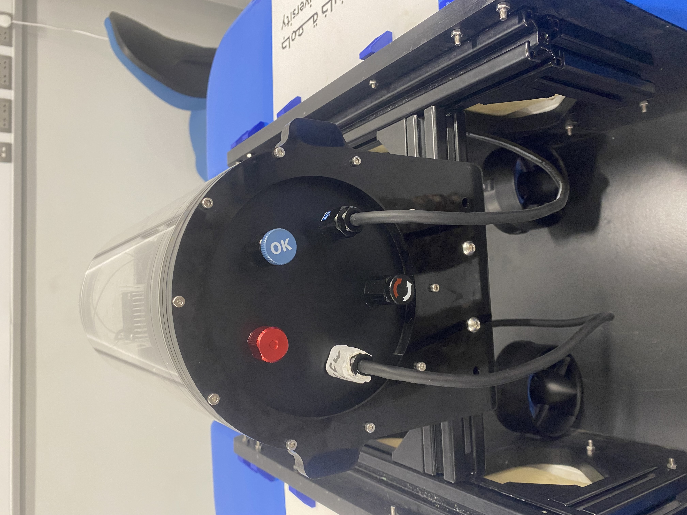
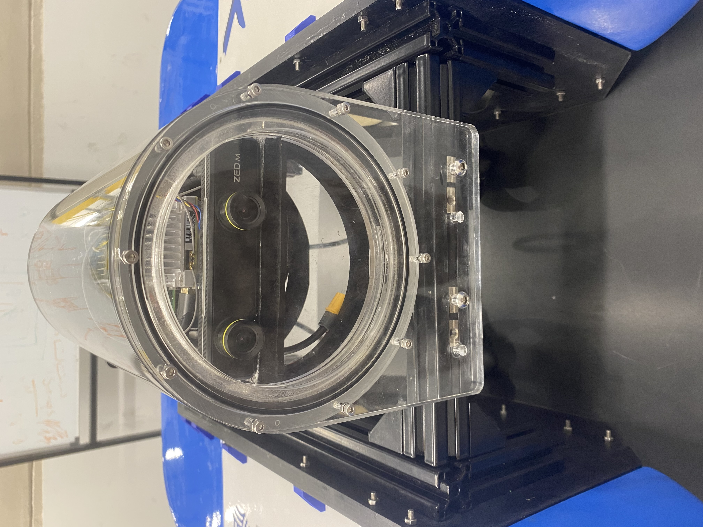
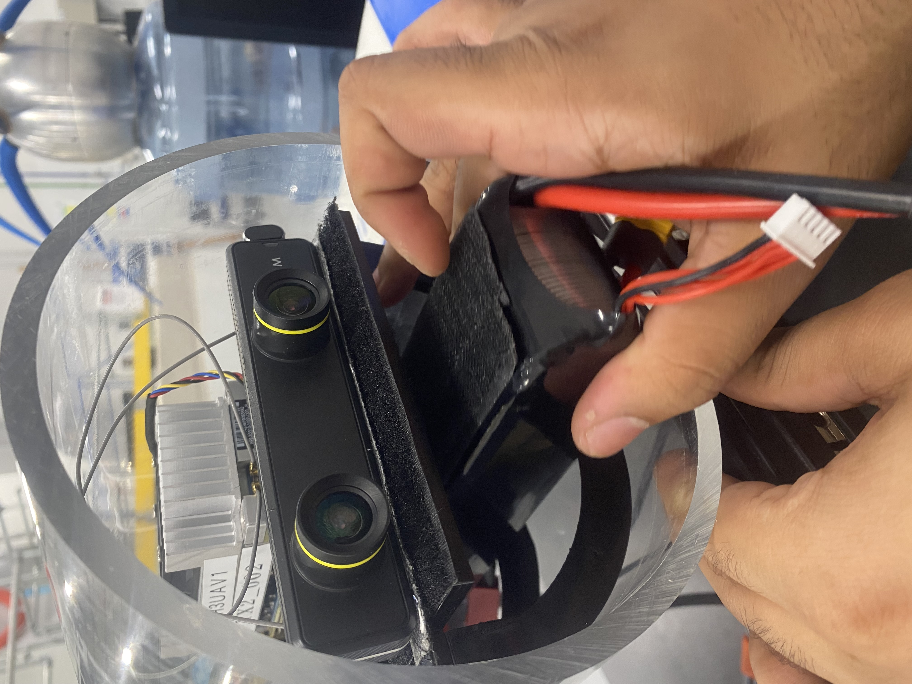
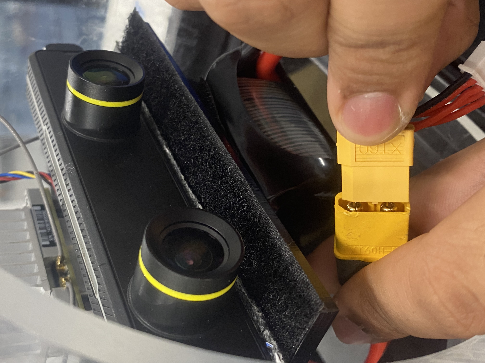
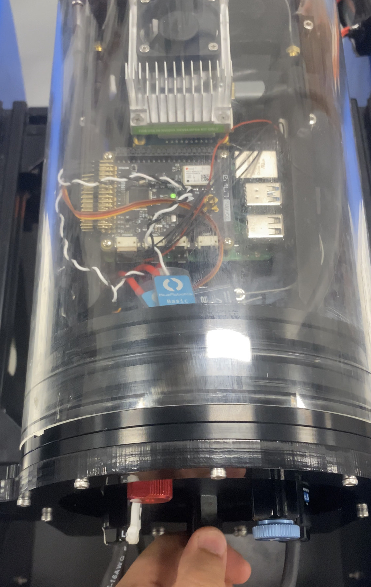

Instructions to operate Marine X
This section detail the instructions needed for every operation of the USV
Turning on the system:
Checking the battery’s charge.
Remove the Air vent then the front Acrylic
Place the Battery and connect it to the circuit
Close the enclosure
Turn on the switch attached to the enclosure
Checking the battery’s charge.
Note
above 15.8V is perfect for this battery type.
Remove the Air vent (The blue one with OK sign).

Remove the front acrylic (Transparent) using L keys.
Stick the battery to the Velcro tape at the bottom of the electronic plates.
Connect the XT60 connectors together then place the front acrylic and air vent back.
Note
Clean the acrylic before placing.
Turn on the system by rotating the power switch clockwise red arrow.

Note
While turning on the switch they will be a beeping sound coming from the thrusters, and the TX2 fan will start rotating and the Raspberry LED will turn on.
Important notes:
Make sure the enclosure is sealed well before developing the USV into the water.
Tether the USV with a long rope
Do not operate the USV more than 2 hours in the water.
Once you finish turn off the USV then remove the battery to charge it up.